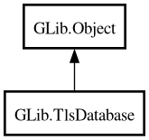

TlsDatabase
Object Hierarchy:

Description:
[
CCode ( type_id =
"g_tls_database_get_type ()" ) ]
[
Version ( since =
"2.30" ) ]
public abstract class TlsDatabase :
Object
Content:
Constants:
Creation methods:
Methods:
- public virtual string? create_certificate_handle (TlsCertificate certificate)
- public virtual TlsCertificate? lookup_certificate_for_handle (string handle, TlsInteraction? interaction, TlsDatabaseLookupFlags flags, Cancellable? cancellable = null) throws Error
- public virtual async TlsCertificate lookup_certificate_for_handle_async (string handle, TlsInteraction? interaction, TlsDatabaseLookupFlags flags, Cancellable? cancellable = null) throws Error
- public virtual TlsCertificate lookup_certificate_issuer (TlsCertificate certificate, TlsInteraction? interaction, TlsDatabaseLookupFlags flags, Cancellable? cancellable = null) throws Error
- public virtual async TlsCertificate lookup_certificate_issuer_async (TlsCertificate certificate, TlsInteraction? interaction, TlsDatabaseLookupFlags flags, Cancellable? cancellable = null) throws Error
- public virtual List<TlsCertificate> lookup_certificates_issued_by (ByteArray issuer_raw_dn, TlsInteraction? interaction, TlsDatabaseLookupFlags flags, Cancellable? cancellable = null) throws Error
- public virtual async List<TlsCertificate> lookup_certificates_issued_by_async (ByteArray issuer_raw_dn, TlsInteraction? interaction, TlsDatabaseLookupFlags flags, Cancellable? cancellable = null) throws Error
- public virtual TlsCertificateFlags verify_chain (TlsCertificate chain, string purpose, SocketConnectable? identity, TlsInteraction? interaction, TlsDatabaseVerifyFlags flags, Cancellable? cancellable = null) throws Error
- public virtual async TlsCertificateFlags verify_chain_async (TlsCertificate chain, string purpose, SocketConnectable? identity, TlsInteraction? interaction, TlsDatabaseVerifyFlags flags, Cancellable? cancellable = null) throws Error
Inherited Members:
All known members inherited from class GLib.Object